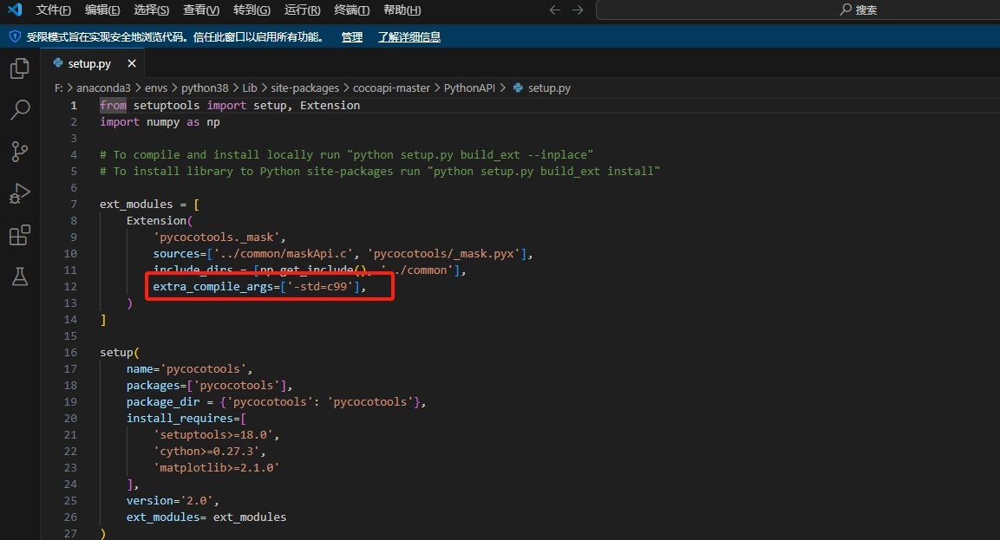

记录一下重装系统后的第一个代码复现
贴一下源代码的链接
环境配置
1. 首先安装ByteTrack
创建虚拟环境后执行下面语句：
1 | git clone https://github.com/ifzhang/ByteTrack.git |
如果不使用国内的镜像源，在执行这一步的时候可能会有很多报错
1 | pip install -r requirements.txt |
因此我使用镜像源安装：
1 | pip install whatever gdown -i http://mirrors.aliyun.com/pypi/simple/ --trusted-host mirrors.aliyun.com |
然后执行：
1 | python setup.py develop |
如果在这一步报错，编辑setup.py，将：
1 | with open("README.md", "r") as f: |
改为：
1 | with open("README.md", "r", encoding='utf_8') as f: |
2.安装pycocotools.
如果直接执行这一步会报错
1 | pip3 install cython; pip3 install 'git+https://github.com/cocodataset/cocoapi.git#subdirectory=PythonAPI' |
需要换一种安装方式
这一部分参考https://blog.csdn.net/hhh590_hh/article/details/126916833
1）首先安装cython:
1 | pip install cython gdown -i http://mirrors.aliyun.com/pypi/simple/ --trusted-host mirrors.aliyun.com |
2）然后在https://github.com/pdollar/coco.git下载源码压缩包，解压后放在虚拟环境的site-packages文件下，
3）打开cocoapi-master\pythonAPI中的setup.py文件，删除下面的两个参数：

4）在anaconda prompt中cd到刚才的cocoapi-master\pythonAPI文件夹下，输入：
1 | python setup.py build_ext --inplace |
如果第一步显示“已完成代码的生成”，第二步显示“Finished processing dependencies for pycocotools==2.0”则表示安装成功。
3.安装cython_bbox
依旧是用国内镜像源：
1 | pip install cython_bbox gdown -i http://mirrors.aliyun.com/pypi/simple/ --trusted-host mirrors.aliyun.com |
运行Demo
1.下载一个预训练模型，官网给出了很多个模型，在这里我使用的是：
贴一下作者给的链接，提取码图上有。
将下载下来的文件放在pretrained文件夹下，如果没有这个文件夹就自己创建一个。
2.修改源码文件地址
打开demo_track.py文件，修改第30行的输入文件地址，将其改为绝对地址：
如果想跑自己下载的视频也可以在这里改为自己的视频文件：
3.跑通Demo
cd到项目文件夹，输入：
1 | python tools/demo_track.py video -f G:/pycharmprojects/pythonProject/ByteTrack-main/exps/example/mot/yolox_x_mix_det.py -c G:/pycharmprojects/pythonProject/ByteTrack-main/pretrained/bytetrack_x_mot17.pth.tar --fuse --save_result |
注意，我在这里输入的都是文件的绝对地址，并且对比作者给出的demo运行方法，我删除了fp16。
fp16虽然可以使运行速度加快，但是加上fp16可能会导致结果没有检测框，并且检测速度也并没有加快 。
等待运行结束后结果会保存在G:\pycharmprojects\pythonProject\ByteTrack-main\YOLOX_outputs\yolox_x_mix_det\track_vis下。
至此，demo就运行完成了
后续可能会继续记录训练的过程，也可能不会^ - ^。